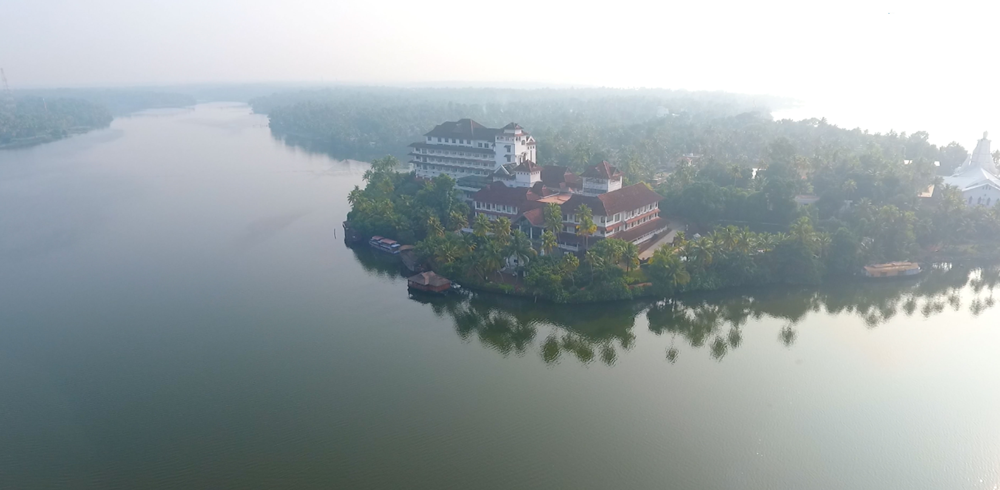
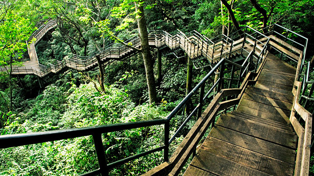
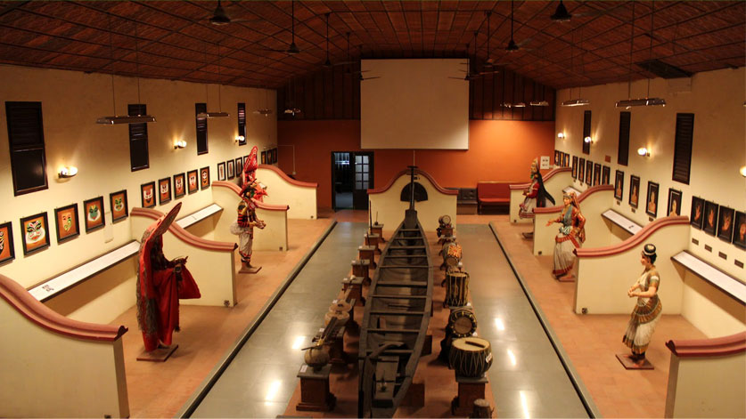

Vaddakunathan Temple

Athirapally Waterfalls

Guruvayoor
Archaeological Museum
If you are a cultural fan or enthusiastic about the rich traditions of Kerala, Thrissur should be ranked as #1 in your travelogue! Also called ‘Trichur’, this city was once the capital of Kingdom of Cochin, and is fondly called the ‘Cultural Capital of Kerala’. Being edged with a number of scared temples and other religious spots, Thrissur serves as an important pilgrimage among the Hindu devotees. Yes, this city is the venue ground of the famous ‘Temple Festival’ or the ‘Thrissur Pooram’ that is known and participated by devotees from across the globe.
Vaddakunathan Temple
Athirapally Waterfalls
Guruvayoor
Archaeological Museum